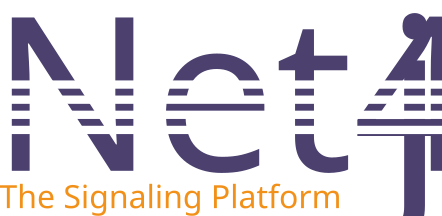
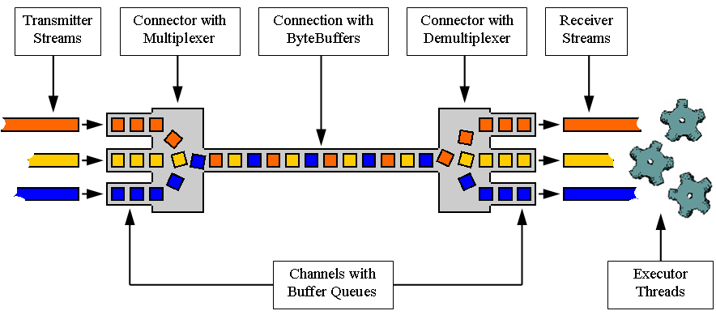

Net4j Signaling Platform

Net4j is a robust, extensible client/server communications framework that empowers developers to build high-performance, scalable, and maintainable distributed applications. By abstracting the underlying transport medium, Net4j enables the creation of custom application protocols that are independent of network details. Originally a standalone project, Net4j is now fully integrated into the CDO Model Repository, benefiting from the synergy of both platforms.
The platform is designed for flexibility and efficiency, supporting a wide range of use cases from enterprise messaging to collaborative tools. Its modular architecture and pluggable protocol support make it suitable for both simple and complex distributed systems, whether running within Eclipse, OSGi, or as a stand-alone Java application.
Main Features
- Modular Architecture: Highly extensible signaling and transport frameworks, allowing developers to add or replace components as needed.
- Transport Protocols: Pluggable support for TCP, SSL, HTTP(S), WebSocket (WS/WSS), and JVM in-process, ensuring broad compatibility and deployment flexibility.
- Application Protocols: Built-in support for CDO, experimental JMS, Buddies, Chat, and the ability to define custom protocols for specialized needs.
- Multiplexing: Efficiently multiplexes multiple application protocols over a single connection, reducing resource usage and simplifying network management.
- Scalability & Performance: Asynchronous, non-blocking buffering kernel delivers high throughput and low latency, even under heavy load.
- Extensibility: Open APIs and extension points make it easy to integrate new protocols, transports, and utilities.
- Security: Extensible security framework with support for secure transports (SSL, HTTPS, WSS) and authentication mechanisms.
- Cross-Platform Compatibility: Operates seamlessly on OSGi, Eclipse, and stand-alone Java environments, supporting diverse deployment scenarios.
- Integration with Eclipse: Deep integration with Eclipse Modeling tools, including UI extensions for monitoring, debugging, and management.
- Stand-alone Operation: Can be used outside Eclipse/OSGi as a pure Java library, making it suitable for headless or embedded applications.
- Interoperability: Designed for integration with a wide range of systems and protocols, facilitating communication across heterogeneous environments.
- Reliability: Production-proven core with robust error handling, monitoring, and management tools to ensure stable operation.
- Monitoring & Management: Built-in monitoring, container management, and debugging tools, including remote tracing and Eclipse UI views.
- Licensing: Open Source under the Eclipse Public License (EPL), encouraging community contributions and commercial adoption.
- Developer Benefits: Simplifies protocol development with utilities for concurrency, caching, events, state machines, and more, accelerating time-to-market for new features.
Typical Use Cases
- Building scalable client/server applications and distributed systems for enterprise and research.
- Implementing custom application protocols for domain-specific communication needs.
- Integrating with the CDO Model Repository for advanced model management and collaboration.
- Developing collaborative platforms such as chat, buddies, and file sharing tools.
- Providing secure, high-performance messaging and data transport for business-critical applications.
- Embedding in Eclipse-based IDEs, OSGi containers, or stand-alone Java applications for maximum flexibility.
Net4j is ideal for organizations seeking a reliable, extensible, and high-performance communication backbone for distributed systems, whether in the cloud, on-premises, or hybrid environments.
Architecture Overview

At its core, Net4j features a fast, asynchronous, and non-blocking multiplexing kernel. This enables multiple application protocols to share a single physical connection, maximizing efficiency and scalability. The architecture is modular, with clear separation between signaling, transport, and application layers. Developers can plug in new transports (such as TCP, HTTP, or custom protocols) and application-level protocols as needed, making Net4j adaptable to evolving requirements.
The platform also provides a comprehensive set of utilities for monitoring, debugging, and managing connections, including remote tracing and container management tools accessible from the Eclipse UI. This holistic approach ensures that both development and operations teams can maintain visibility and control over distributed systems built on Net4j.
Resources
- Download (bundled with CDO)
- Help Center (see Net4j sections in CDO docs)
Net4j continues to evolve as part of the CDO ecosystem, offering a solid foundation for next-generation distributed applications.